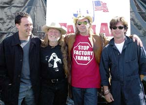

Musical icon and Farm Aid president Willie Nelson kicked off last September’s annual Farm Aid concert by saying, “We are 21 years old today. We are now an adult, and legal.” The joke sparked rousing applause from a standing-room-only audience of music lovers, family farmers, food advocates, journalists and sponsors.
Farm Aid raises money, almost $30 million to date, for nonprofits working on food and farming issues, and to aid farmers with disaster relief. When the organization got its start in 1985, national newspapers were carrying daily stories of farm foreclosures and the financial and emotional depression that was ripping the heartland apart. Nelson was galvanized into action and recruited fellow musicians John Mellencamp and Neil Young. Together, they drafted dozens of other musicians to perform at the first Farm Aid concert. They’ve since shared the stage with about 400 acts. From the beginning, all the artists have performed for free and covered their own expenses to get to the show.
The annual concert is the major fundraiser for Farm Aid. Visitors to this year’s show enjoyed not only the music, but also a better class of fare than is usually available at entertainment venues, with organic treats ranging from beer to veggie burgers. Eleven acts, including the Nitty Gritty Dirt Band, Gov’t Mule, Los Lonely Boys and Jerry Lee Lewis, joined the Farm Aid board members to support the cause. The Farm Aid board of directors now includes Nelson, Mellencamp, Young and Dave Matthews.
Food Routes is a nonprofit grantee of Farm Aid. Tim Schlitzer, Food Routes executive director, says Farm Aid understands that farmers “make a better profit by selling directly to the public.” According to Schlitzer, “They also realize that small family farmers are one of our best resources in the country to provide good, locally sustainable, whole foods. By supporting our ‘Buy Fresh, Buy Local’ program in 21 states, they are supporting a marketing system that allows farmers to connect with consumers.”
Hank Moss, a Louisiana rancher, received assistance from Farm Aid’s disaster relief fund in 2004. His ranch, located four miles from the coast, was inundated by massive storm surges when Hurricanes Rita and Katrina hammered the Gulf Coast. He lost all his buildings, fencing, some cattle, and his crawfish and rice operations. And when the water receded, his land was covered with salt.
“Farm Aid sent me a load of hay quickly after the storm,” Moss says. “It helped sustain the cattle and horses I was able to save. It gave me the first inkling of motivation - I had something back on my ranch of value. They also publicized our plight on their Web site, which was helpful with getting other people’s attention. Farm Aid gave us some validity and helped focus attention to the needs we had down here.”
Learn more about Farm Aid and its annual fundraising concert at www.farmaid.org, or call (800) 327-6243. To find farmers in your area who sell food locally or to list your farm, visit Food Routes.
|
 PAUL NATKIN/PHOTO RESERVE Together, the Farm Aid board members (from left: Dave Matthews, Willie Nelson, Neil Young and John Mellencamp) have helped raise nearly $30 million for America's farmers. |
|
|